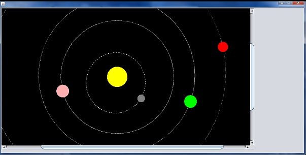

News/Updates
March 28, 2014
Here's a look at the updated UI. Things are starting to flesh out. We can't wait to start implementing the flight path! Also, updated schedule and added instructions for compiling and running in the section Project-Description.
March 27, 2014
Fixed a major bug that caused planets to skip portions of their orbits. Fixed error in calculating Earth's planetary position. Added a few things to the UI and functionality to the selection of a launch date. The orbit simulation has been put into a separate class called OrbitSimulation. To use it, change line 6 of MissionLaunch.java from:
MissionVisual missionVisual = new MissionVisual(visualViewPort);
to:OrbitSimulation missionVisual = new OrbitSimulation(visualViewPort);
March 26, 2014
A screen shot from our prototype showing a simulation of planet orbits using AstroLib to get planetary positions. The sun and planets are not to scale and some adjustments still needs to be made. A prototype of our program has been committed.
March 23, 2014
Changed the Sources section to Journal.
Gathered some valuable information for the project. The team journal has been updated to include these sources and what we've done for the week.
March 16, 2014
Website is up and running. Project phase 1 commencing. More content will be added to the website as the project progresses.